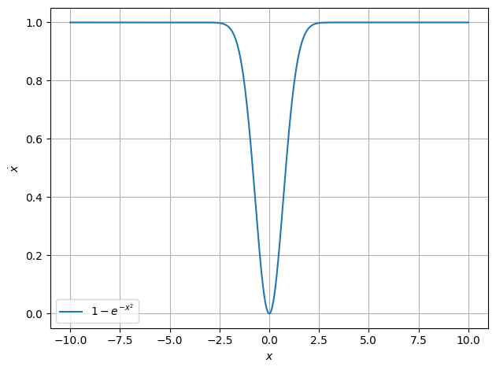
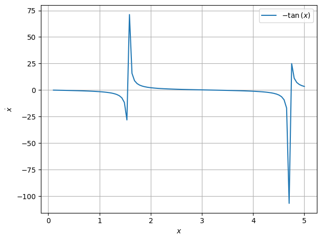
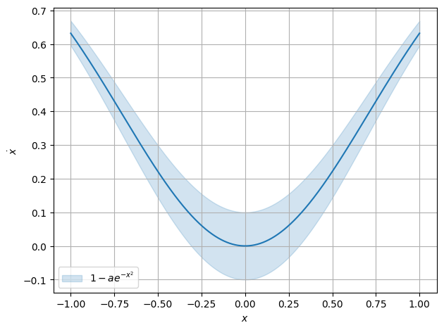
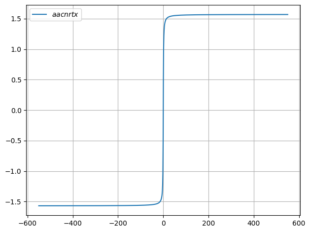
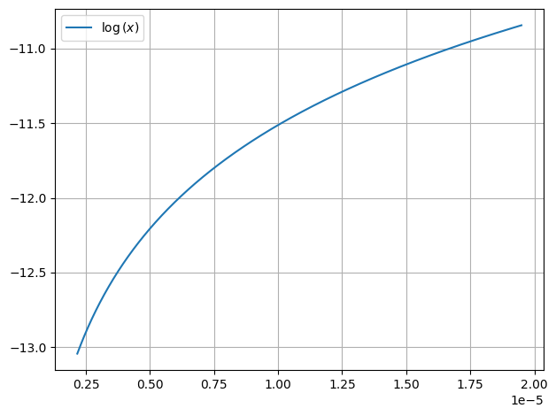
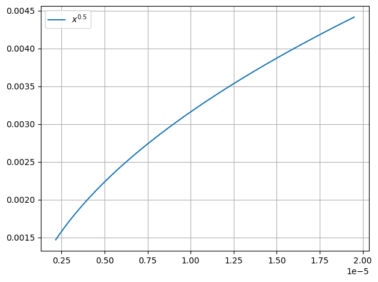

Function Plot
[1]:
from smpl import plot
import numpy as np
import smpl
import math
smpl.__version__
[1]:
'1.3.0'
without uncertainties
\(\dot x = 1- \exp(- x^2)\)
Fixed point \(x = 0\) and
\(\ddot x = -2x \exp(-x^2) \implies \ddot x(x = 0)=0\)
only metastable for \(x\lt0\)
[2]:
plot.function( lambda x : 1- np.exp(-x**2), xaxis="$x$", yaxis="$\\dot x$",xmin=-10, xmax=10 )

\(\dot x = \ln x\)
Fixed point \(x = 1\)
\[\ddot x = \frac{1}{x} \implies \ddot x(x=1) = 1 > 0\]
\(\implies\) unstable
[3]:
plot.function( lambda x : np.log(x), xaxis="$x$", yaxis="$\\dot x$",xmin=0.1, xmax=5 )
\(\dot x = -\tan x\)
Fixed points for \(x=0\) or \(x=\pm n\pi\) with \(n\in \mathbb{N}\)
\[\ddot x = -\frac{1}{\cos^2(x)}\]
\[\ddot x(x=0) = -1 \lt 0\]
\[\ddot x(x=n \pi) = -1 \lt 0\]
\(\implies\) stable
[4]:
plot.function( lambda x : -np.tan(x), xaxis="$x$", yaxis="$\\dot x$",xmin=0.1, xmax=5,steps=100 )

with uncertainties
[5]:
import uncertainties as unc
a = unc.ufloat(1,0.1)
[6]:
plot.function(lambda x : 1- a*np.exp(-x**2), xaxis="$x$", yaxis="$\\dot x$",xmin=-1, xmax=1,sigmas=1 )

Complex
[7]:
from smpl.stat import fft
y = np.sin(np.arange(256))
print(len(fft(y)))
plot.data(*fft(y),label="FFT",fmt="-")
2
/__w/smpl/smpl/smpl/plot.py:852: UserWarning: The figure layout has changed to tight
plt.tight_layout()
[7]:
(None, None)
[8]:
from smpl.stat import fft
plot.data(*fft(np.sin(np.arange(256))),*fft(np.sin(1/np.pi*np.arange(100))),label="FFT",fmt="-")
[8]:
[(None, None), (None, None)]
without xmin and xmax
xmin and xmax will have to be guessed
[9]:
from smpl import plot
plot.function(lambda x: x**2,)
[10]:
from smpl import plot
import numpy as np
def f(x):
return np.exp(x)
plot.function(f,label="exp")
/tmp/ipykernel_1773/1264896925.py:4: RuntimeWarning: overflow encountered in exp
return np.exp(x)
[11]:
from smpl import plot
from smpl import functions as f
def gauss(x):
"""Gauss"""
return f.gauss(x,0,1,3,0)
plot.function(gauss)
[12]:
def gauss(x):
return np.arctan(x)
plot.function(gauss)

[13]:
def gauss(x):
return np.tan(x)
plot.function(gauss)
[14]:
def gauss(x):
return np.log(x)
plot.function(gauss)
/tmp/ipykernel_1773/455222689.py:2: RuntimeWarning: invalid value encountered in log
return np.log(x)

[15]:
def gauss(x):
return x**3+5*x**2-2
plot.function(gauss)
[16]:
def gauss(x):
return x**0.5
plot.function(gauss)
/tmp/ipykernel_1773/1404190211.py:2: RuntimeWarning: invalid value encountered in sqrt
return x**0.5

Guessing the interesting regions of a function can’t always be correct/satisfactory, especially in numerical unstable regions:
[17]:
c=299792458#m/s
h=4.13566769692*10**-15#eVs
kb=8.617333262*10**-5#eV/K
T=273
def Strahlungsgesetz(x):
return 8*np.pi/c**3*h*x**3/(np.exp((h*x)/(kb*T))-1)
plot.function(Strahlungsgesetz,xaxis="$x$", yaxis="$\\dot x$")
/tmp/ipykernel_1773/4149904953.py:6: RuntimeWarning: overflow encountered in exp
return 8*np.pi/c**3*h*x**3/(np.exp((h*x)/(kb*T))-1)
/tmp/ipykernel_1773/4149904953.py:6: RuntimeWarning: invalid value encountered in divide
return 8*np.pi/c**3*h*x**3/(np.exp((h*x)/(kb*T))-1)
/tmp/ipykernel_1773/4149904953.py:6: RuntimeWarning: divide by zero encountered in divide
return 8*np.pi/c**3*h*x**3/(np.exp((h*x)/(kb*T))-1)
/github/home/.cache/pypoetry/virtualenvs/smpl-4sWS420u-py3.8/lib/python3.8/site-packages/scipy/optimize/_optimize.py:790: RuntimeWarning: invalid value encountered in subtract
np.max(np.abs(fsim[0] - fsim[1:])) <= fatol):
/github/home/.cache/pypoetry/virtualenvs/smpl-4sWS420u-py3.8/lib/python3.8/site-packages/scipy/misc/_common.py:144: RuntimeWarning: invalid value encountered in multiply
val += weights[k]*func(x0+(k-ho)*dx,*args)
[18]:
plot.function(Strahlungsgesetz,xaxis="$x$", yaxis="$\\dot x$",xmin=1e-7-2e-2,xmax=1e-7+2e-2)
/tmp/ipykernel_1773/4149904953.py:6: RuntimeWarning: divide by zero encountered in divide
return 8*np.pi/c**3*h*x**3/(np.exp((h*x)/(kb*T))-1)
[19]:
plot.function(Strahlungsgesetz,xaxis="$x$", yaxis="$\\dot x$",xmin=1,xmax=0.3e15)
[ ]: